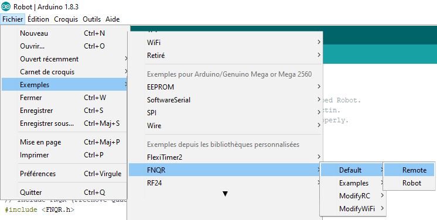

Install the NRF24L01 module on the controller.
Connect the remote control to your computer by USB and then launch the Arduino IDE. Open the Remote file in File > Examples > FNQR > Default > Remote
In Tools choose Board Type > Arduino / Genuino Uno, and in Port choose the port on which your board is connected: the board name must appear in parenthesis. Check and then upload the sketch.
The remote control can be powered by the USB port of your computer or by a 9V battery.
Activate individually only one of the three switches S1-D4, S2-D3 et S3-D2:
The robot is now finished, Congratulations!